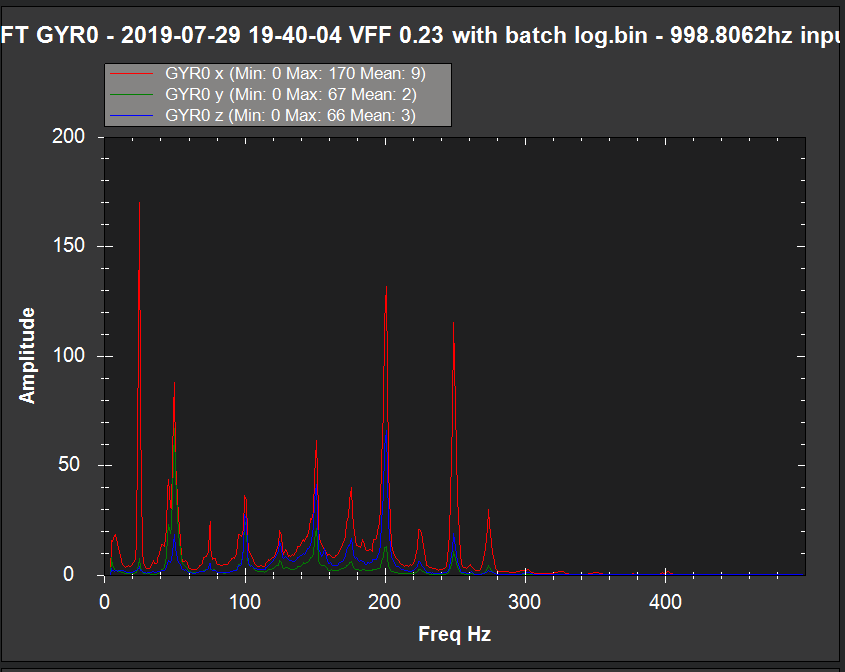

[copywiki destination=”copter,plane”]
Traditional Helicopter Notch Filter Setup¶
Perform the Determination of Noise Frequencies analysis explained in the Throttle based setup section. From the FFT you should see spikes at the frequency of your rotor speed in Hz (RPM/60) and harmonics of that frequency. In the image below, the rotor speed is 25hz. Note that the next two biggest spikes occur at 50 Hz and 100 Hz.
{kind=link}
In most cases, only the rotor speed frequency, the second harmonic and 4th harmonic. Use the dynamic harmonic notch setup below if you have an ESC or RPM sensor for rotor speed. Otherwise use the static harmonic notch setup below.
Note
There will most likely be another spike at the tail rotor frequency at the main rotor frequency X the tail rotor speed up gear ratio. This is will usually be attenuated by the harmonic notch setup since its often a close to a harmonic of the main rotor frequency.
Static Harmonic Notch¶
If there is not an RPM sensor, the harmonic notch reference frequency will be set and will not change. If the rotor speed in RPM based on settings of the ESC governor or the internal RSC governor is known, then that value converted to Hz would be used to set the harmonic notch reference frequency. So here are the settings for the static harmonic notch. Note that the parameter INS_HNTCH_REF is set to zero for the static harmonic notch.
Set INS_HNTCH_ENABLE = 1 to enable the harmonic notch
Set INS_HNTCH_REF = 0 to set the harmonic notch reference value for the static harmonic notch
Set INS_HNTCH_FREQ = Rotor Speed in Hz to set the harmonic notch reference frequency
Set INS_HNTCH_BW = 10 to set the harmonic notch bandwidth
Set INS_HNTCH_HMNCS = 11 to set 1st, 2nd, and 4th harmonics
Dynamic Harmonic Notch¶
If there is an RPM sensor set up on RPM 1, the harmonic notch reference frequency can be set dynamically using the RPM 1 sensor (INS_HNTCH_MODE = 2). The harmonic notch reference frequency parameter, INS_HNTCH_FREQ, is used to indicate the lowest rotor speed for which the RPM sensor should be used to dynamically set the harmonic notch reference frequency. It is recommended that this be set to half of the governed rotor speed.
First, ensure that the RPM 1 data is valid and scaled to the rotor speed using the RPM1_SCALING parameter. Then set the INS_HNTCH_REF parameter to 1 which will enable the dynamic setting of the harmonic notch. The harmonic notch feature will automatically scale the RPM sensor data to Hz. If for some reason the RPM sensor can not be set to the rotor speed, then the INS_HNTCH_REF parameter can be used to scale the RPM Sensor data. For example, let’s say the RPM sensor was measuring engine RPM which was geared at 10 to 1 to the rotor RPM. Then the INS_HNTCH_REF parameter would be set to 0.1 to scale the RPM sensor data for the rotor RPM. So here are the settings for the dynamic harmonic notch.
Set INS_HNTCH_ENABLE = 1 to enable the harmonic notch
Set INS_HNTCH_REF = 1 to set the harmonic notch reference value to the RPM sensor data. RPM sensor data is automatically scaled to Hz.
Set INS_HNTCH_FREQ = half of governed Rotor Speed in Hz to set the lower bound of the dynamic harmonic notch reference frequency.
Set INS_HNTCH_BW = 10 to set the harmonic notch bandwidth
Set INS_HNTCH_HMNCS = 11 to set 1st, 2nd, and 4th harmonics
Checking Harmonic Notch Effectiveness¶
After setting up the harmonic notch, the effect on the control signal data can be checked using the instructions for Post Configuration Confirmation Flight and Post-Flight Analysis.